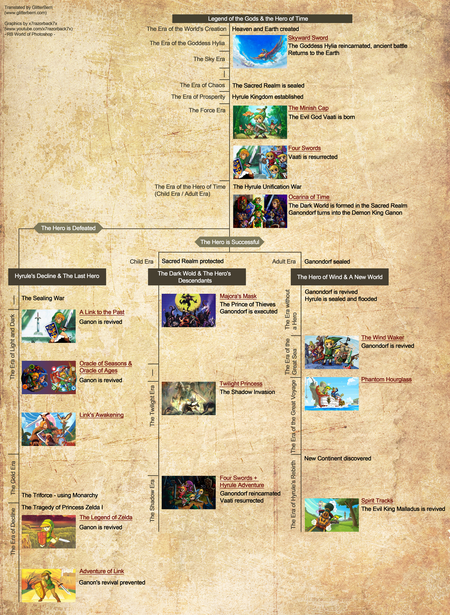

Historia

El libro Hyrule Historia (2011) contiene la cronología oficial de la
serie, la cual señala que existen tres líneas cronológicas diferentes
que surgen a partir de Ocarina of Time. Sin embargo, este no es el
primer juego en el canon, pues le preceden Skyward Sword —cuya historia
relata la «Era de la diosa Hylia» en Altárea—, The Minish Cap y Four
Swords —que ocurren en el recién constituido Hyrule, donde surge el
monstruo Vaati—. La cronología publicada en el libro es precedida por un
texto en el que se estipula que la información fue proporcionada por
historiadores de Hyrule —«Esta es la historia que ha ido pasando de
generación en generación entre vosotros, humanos»—.38 A continuación,
se muestran dos líneas de tiempo principales: la primera hace alusión a
un Link que es vencido por Ganondorf y detalla las consecuencias de este
acontecimiento. La otra línea se divide en dos, y surge a partir de la
victoria de Link sobre el mal; sus dos divisiones correspondientes se
refieren ya sea a la etapa de Link como niño, o a la de adulto.
En la cronología donde Link es derrotado, Ganondorf resulta airoso en su batalla final contra el joven y obtiene las dos piezas restantes de la Trifuerza, aunque es aprisionado por los siete Sabios en el Reino Sagrado. Conforme transcurre el tiempo, la raza de hylianos comienza a desaparecer y con ella Hyrule. En esta línea de tiempo aparecen de forma ordenada las tramas de A Link to the Past,37 Link's Awakening, Oracle of Seasons, Oracle of Ages, A Link Between Worlds28 —que en conjunto comprenden la etapa conocida como «Era de la luz y la oscuridad» en la que Ganondorf es aprisionado—, Tri Force Heroes, The Legend of Zelda —tras la instauración de la familia real de Hyrule, portadora de la Trifuerza— y Adventure of Link —estos dos últimos forman parte de la etapa denominada «Era del declive»— donde se impide la resurrección de Ganondorf.
La otra línea de tiempo, en la que un Link en su etapa infantil vence al malvado hechicero, se explica que el personaje es llevado al Mundo Oscuro en Majora's Mask, y posteriormente el villano es ejecutado. Tras esto se relatan las aventuras de los descendientes del héroe original en Twilight Princess y en Four Swords Adventures, en las cuales Ganondorf reencarna y el monstruo Vaati resurge. Estas dos etapas son conocidas como «Eras del Crepúsculo y de las Sombras», respectivamente. En la otra división de esta última línea de tiempo, es decir la etapa de Link como adulto, Ganondorf revive y ante la ausencia de Link las diosas inundan Hyrule para proteger a sus habitantes. Esto abre paso a la trama de The Wind Waker —o también conocida como la «Era del Gran Mar»—, seguida directamente de Phantom Hourglass —«Era del Gran Viaje»—, tras el cual se descubre un nuevo continente y se establece ahí el nuevo reino de Hyrule. Las aventuras de esta línea finalizan con Spirit Tracks.37 Finalmente, la trama de Breath of the Wild acontece después de todos los anteriores juegos, sin tener vínculo con alguna de las cronologías anteriores.
En la cronología donde Link es derrotado, Ganondorf resulta airoso en su batalla final contra el joven y obtiene las dos piezas restantes de la Trifuerza, aunque es aprisionado por los siete Sabios en el Reino Sagrado. Conforme transcurre el tiempo, la raza de hylianos comienza a desaparecer y con ella Hyrule. En esta línea de tiempo aparecen de forma ordenada las tramas de A Link to the Past,37 Link's Awakening, Oracle of Seasons, Oracle of Ages, A Link Between Worlds28 —que en conjunto comprenden la etapa conocida como «Era de la luz y la oscuridad» en la que Ganondorf es aprisionado—, Tri Force Heroes, The Legend of Zelda —tras la instauración de la familia real de Hyrule, portadora de la Trifuerza— y Adventure of Link —estos dos últimos forman parte de la etapa denominada «Era del declive»— donde se impide la resurrección de Ganondorf.
La otra línea de tiempo, en la que un Link en su etapa infantil vence al malvado hechicero, se explica que el personaje es llevado al Mundo Oscuro en Majora's Mask, y posteriormente el villano es ejecutado. Tras esto se relatan las aventuras de los descendientes del héroe original en Twilight Princess y en Four Swords Adventures, en las cuales Ganondorf reencarna y el monstruo Vaati resurge. Estas dos etapas son conocidas como «Eras del Crepúsculo y de las Sombras», respectivamente. En la otra división de esta última línea de tiempo, es decir la etapa de Link como adulto, Ganondorf revive y ante la ausencia de Link las diosas inundan Hyrule para proteger a sus habitantes. Esto abre paso a la trama de The Wind Waker —o también conocida como la «Era del Gran Mar»—, seguida directamente de Phantom Hourglass —«Era del Gran Viaje»—, tras el cual se descubre un nuevo continente y se establece ahí el nuevo reino de Hyrule. Las aventuras de esta línea finalizan con Spirit Tracks.37 Finalmente, la trama de Breath of the Wild acontece después de todos los anteriores juegos, sin tener vínculo con alguna de las cronologías anteriores.